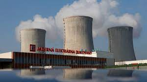

Паливно-енергетична галузь промисловості

Електроенергетика є основним сектором соціально-економічного комплексу країни. На кінець 2019 року встановлена потужність-нетто електростанцій - 22012 МВт. На частку теплових електростанцій (ТЕС), що спалюють органічне паливо, припадає 13031 МВт, або 59,1%. Встановлена потужність атомних електростанцій – 4290 МВт або 19,5%.